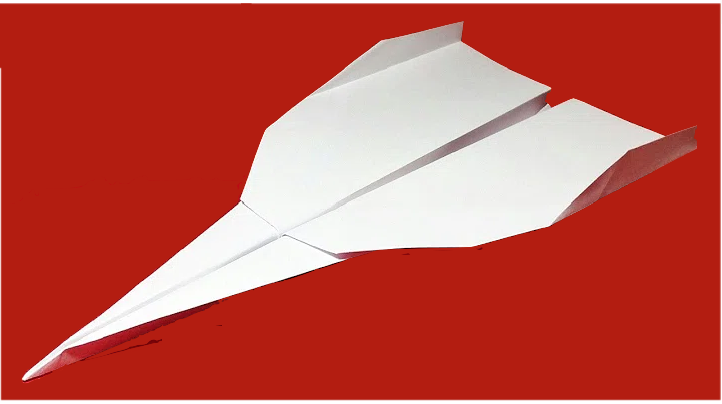
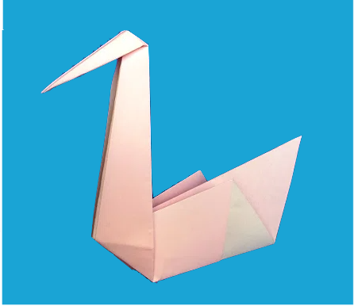
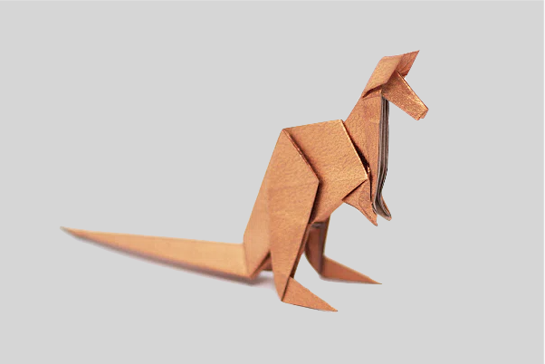
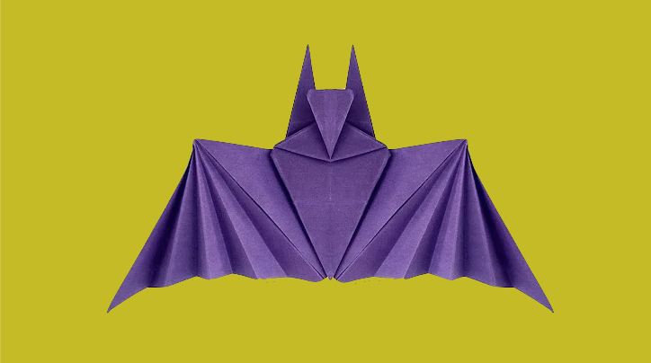

1. Plane
i) The aeroplane was invented in 1903 by the Wright Brothers, Orville and Wilbur Wright.
ii) In 1914, the use of Commercial(or passenger) flights began.
iii) Guess what! A plane can fly despite losing an engine!
2. Swan
i) Did you know that a female swan is called a pen while a male swan is called a cob and their young are called cygnets!
ii) A swan has over 20,000 feathers on its body.
iii) Do you know that swans can sleep while floating on water!
3. Kangaroo
i) The term for a baby kangaroo is "joey".
ii) Did you know that the mother kangaroo feeds her joey by pumping down the milk into their throats.
iii) They communicate with each other with signs like making a hissing noise or stomping their feet.
4. Bat for Halloween
i) The world's fastest bat is called as the "Flying Fox".
ii) Bats have very poor eyesight and use their echoes to travel carefully.
iii) Bats hang upside-down while hibernating.